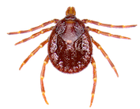
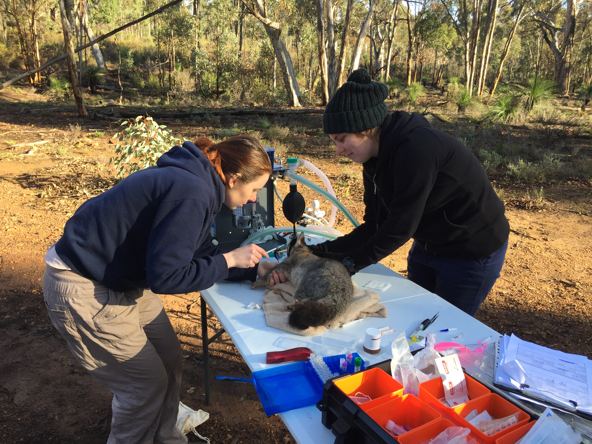

Welcome!
I am an early career researcher at Murdoch University, Western Australia. I am currently employed as a post‐doctoral research fellow within the Centre for Computational and Systems Medicine. This research is focused on understand‐ ing the interactions at the host‐microbe axis using a range of ‐omic technologies. My recent PhD research was foc‐ sued on ticks (Ixodida) and associated vector‐borne microbes (bacteria and protozoa) in Australian wildlife
I am currently working on a project in conjunction with the Australian National Phenome Centre titled Understanding host-microbiome signalling axes in ageing under the direction of Prof. Elaine Holmes. The research aims to deepen the understanding of host-microbiome signalling in ageing by: (i) bringing together next generation sequencing technologies to characterise age-associated change in gut bacterial composition, (ii) metabolic profiling to identify changes in functionality of the ageing microbiome, and (iii) a combination of in vitro and in vivo screening approaches to establish molecular mechanisms. The new knowledge will facilitate development of improved models of health care.
I recently completed by PhD thesis titled Tiresome ticks: Ecology and transmission of tick-borne disease in Australia . This was part of an ARC linkage grant (LP160100200) by the Vector and Waterborne Pathogens Research Group at Murdoch University. It aimed to identify and characterise the microbial biodiversity in ticks and wildlife reservoir hosts, providing important insights into potential causative agent(s) of zoonotic tick-borne pathogens.
I started my PhD in 2018, as a continuation of the number of questions that arose from my honours project. Under the supervision of Dr. Charlotte Oksam, Prof. Peter Irwin,, Prof. Una Ryan and Prof. Peter Banks (University of Sydney). My project is titled Ecology of ticks and microbes in Australia. I hope to uncover patterns in the life cycle of ticks and their related microbes in Australian wildlife and investigate the overlap with cases of human tick-borne illnesses.

In 2017 I undertook an honours research project in Molecular Biology (first class). My thesis was titled ‘Profiling the bacterial microbiome of ticks that parasitise bandicoots in Australia’, under the supervision of Dr. Charlotte Oksam and Prof. Peter Irwin, and is available for download here. During my project I identified a number of recently described and novel candidate tick-borne pathogens in ticks parasitsing bandicoots (Order: Peramelemorphia). After finishing my honours research I undertook a paid summer internship with Pawsey Supercomputing Centre in November 2017, diving into all things coding and bioinformatics.
I completed a Bachelor of Science in Animal Health and Wildlife & Conservation Biology (2014–2016). Durng my undergraduate studies I developed a strong passion for wildlife health which evolved into my fascination with the interconnection of the health of the environment, animals and people. I spent time volunteering on a number of projects, and was heavily involved as a volunteer field and lab assistant into the woylie decline as part of Dr. Amy Northover’s PhD. My interests expand to other areas of wildlife conservation, including the completion of an independent project on camera trapping of small mammals in Dryandra woodlands under the supervision of A/Prof Peter Spencer (Murdoch University) and Mark Cowan (Parks and Wildlife, Western Australia).
